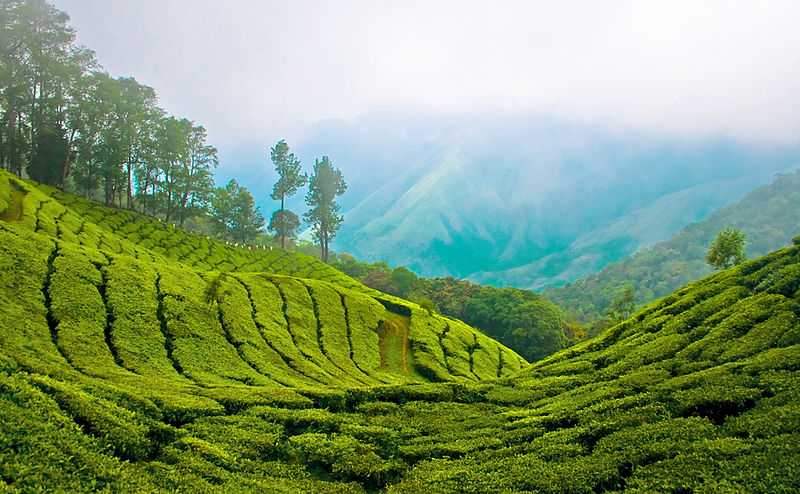
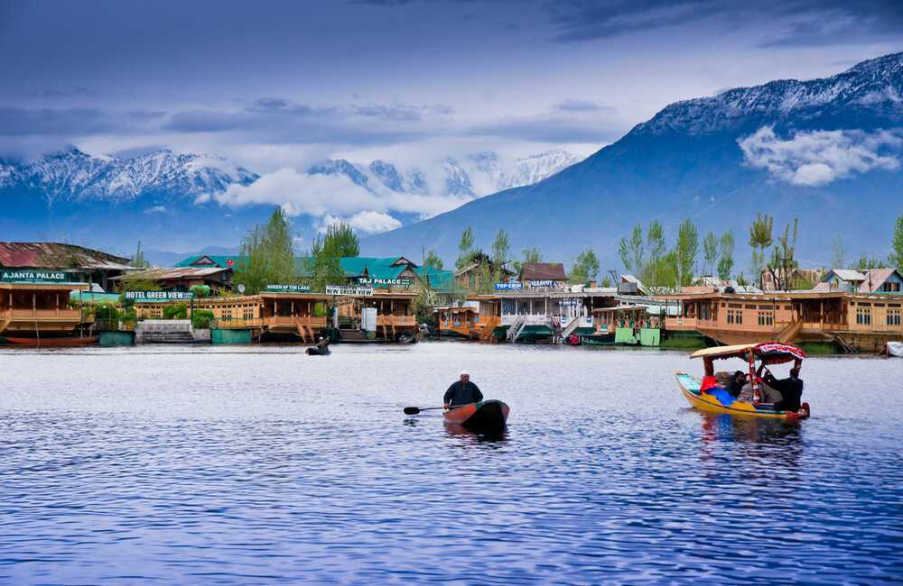
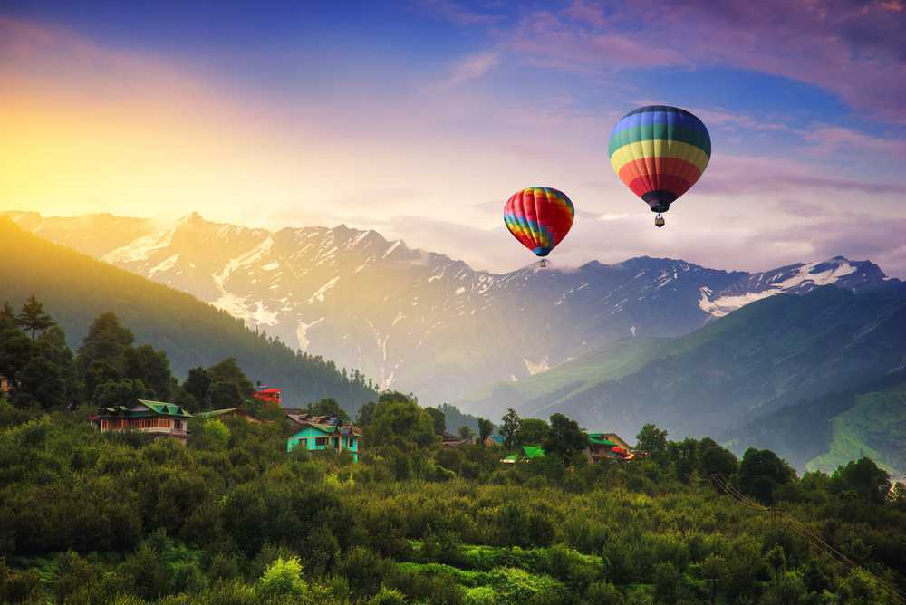
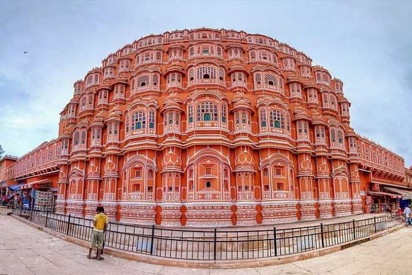

Famous for the tea estates, greenery, winding roads, blanket of mist, and viewpoints, Munnar is a hill station in Kerala, located in the Idukki district. Lying in the Western Ghats at 1600 metres, it is one of the most sought after and visited travel destinations globally.

Popularly referred to as the "Paradise on Earth," Kashmir is a breathtaking valley in Jammu & Kashmir union territory in 2019. Offering unique experiences year-round, it captivates visitors with Shikara rides and Mughal gardens in Srinagar during summers.

With spectacular valleys, breathtaking views, snowcapped mountains, and lush forests of oak, deodar, and pine, Manali is a magical hill station at the northern end of Kullu valley in Himachal Pradesh.

Jaipur, the capital city of Rajasthan, stands as a jewel in the crown of the Golden Triangle, alongside Delhi and Agra. This enchanting city, often referred to as the "Pink City," owes its nickname to the terracotta-pink hue that adorns many of its buildings.